OUGC Awards (1.0)
Este plugin agregara un poderoso sistema de medallas a tu foro.
Información:
- Nombre: OUGC Awards
- Descripcion: Este plugin agregara un poderoso sistema de medallas a tu foro.
- Autor: Omar Gonzalez
- Website: uDezain
- Fecha: Abril 08, 2012.
- Versión: 1.0
- Versión MyBB: 1.6.7
Features:
- Uso de imágenes internas y externas.
- Soporte completo de múltiples idiomas.
- Enviado de MP al otorgar premios.
- Muestra cada premio en el perfil, mensaje, o ambos.
- Desactiva premios sin borrar información.
- Otorga y/o remueve premios desde el ModCP.
Instalación:
- Sube el contenido de la carpeta "Upload" a tu carpeta de MyBB.
- Dirígete a "ACP -> Configuración -> Plugins" y activa este plugin.
- Dirígete a "ACP -> Usuarios & Grupos -> Manage Awards" para agregar, otorgar, remover, encontrar usuarios por premio, editar, o borrar premios.
- Activa el plugin y modifica las opciones desde "ACP -> Configuración -> OUGC Awards Settings".
Opciones Generales del Plugin:
- Activar Plugin: Activar/desactivar sin perder información.
- Máximo de Premios en Mensajes: Máximo numero de premios a mostrar en mensajes. Valores permitidos:
"-1" para todos
"numero" para un máximo.
"0" o cualquier otra cosa sera igual a ninguno (des habilitado).
- Máximo de Premios en Perfiles: Como arriba.
- Mostrar premios ocultos en el ModCP: Permitir a los moderadores dar/remover premios ocultos.
- Moderadores de Premios: Por defecto, solo administradores y Super Moderadores pueden administrar premios desde el ModCP. Inserta una lista separada por comas de los grupos que pueden moderar.
Creando un Premio:
- Nombre: Un corto nombre para el premio. (Requerido)
- Descripcion: Una corta Descripcion para el premio. (Opcional)
- Imagen: La imagen del premio. (Opcional)
"http://..." para imágenes externas
"name.png" para imágenes en la carpeta MYBB_ROOT/images/ougc_awards/ y si existen.
"/name.png" para imágenes internas relativas a tu foro.
Cualquier otra cosa intentara usar la imagen predeterminada (MYBB_ROOT/images/ougc_awards/default.png).
- Visible: Si esta o no activo este premio.
- MP: MP a ser enviado al entregar. (Opcional | Vacío = no MP)
"{1}" = Nombre del Usuario
"{2}" = Nombre del Premio
"{3}" = Razón
"{4}" = Imagen
- Tipo: Mostrar en perfiles, mensajes, o ambos.
Otorgar Premio:
- Usuario: Nombre de usuario del usuario a quien se le debe entregar el premio. (Requerido)
- Razón: Una corta descripción para otorgar el premio. (Opcional)
Remover Premio de Usuario:
- Usuario: Nombre de usuario del usuario a quien se le debe remover el premio. (Requerido)
Editar Premio de Usuario:
- Premio: Premio nuevo. (Requerido)
- Razón: Una corta descripción para otorgar el premio. (Opcional)
- Estampa de Tiempo: La estampilla unix de la fecha en que el premio fue otorgado. (Requerido)
Reconstruir Cache:
- El cache debería estar siempre actualizado, pero aun así puedes actualizarlo desde el panel de control administrativo así como del de moderación.
Capturas:
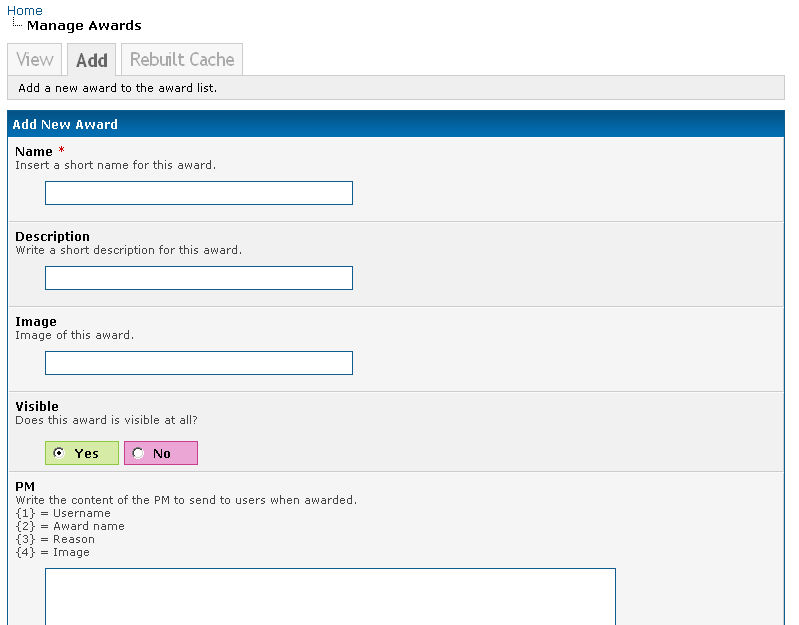
 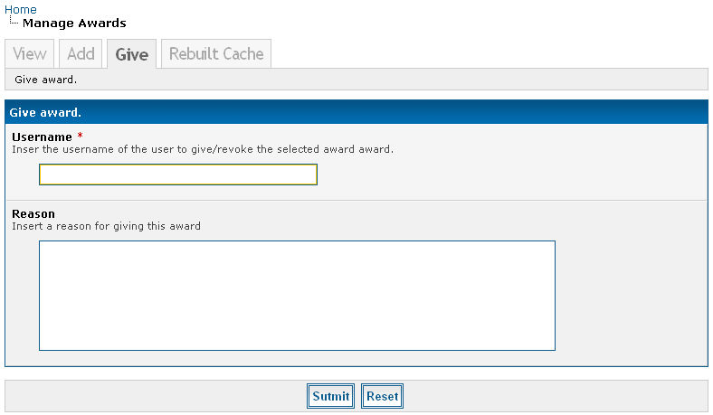
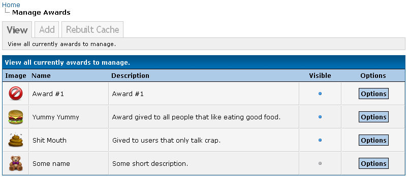
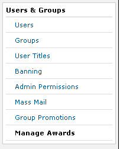
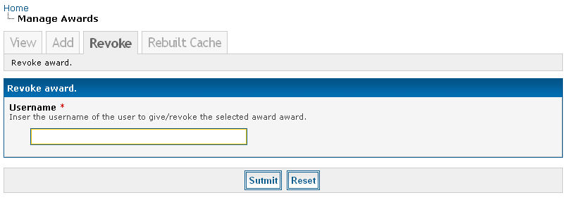
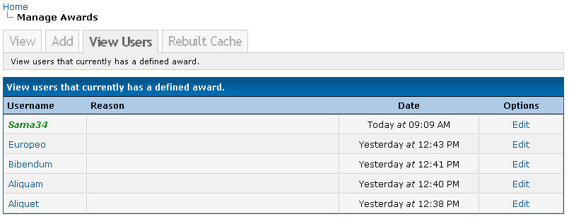
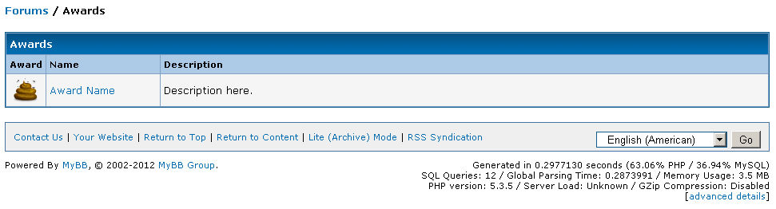
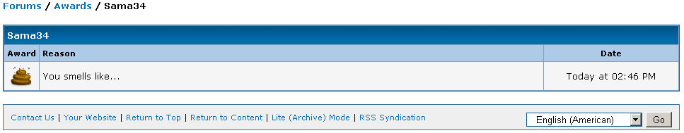
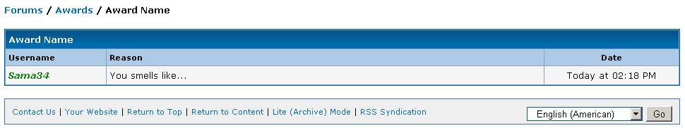
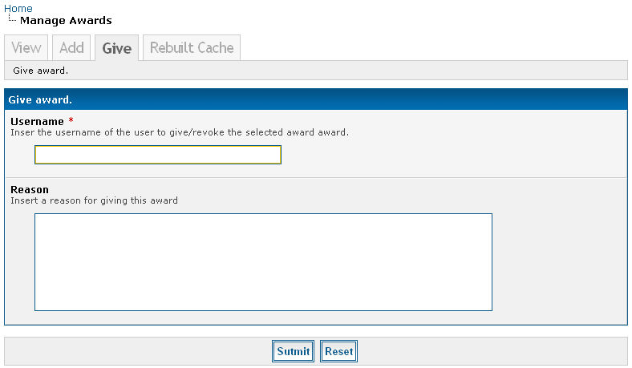
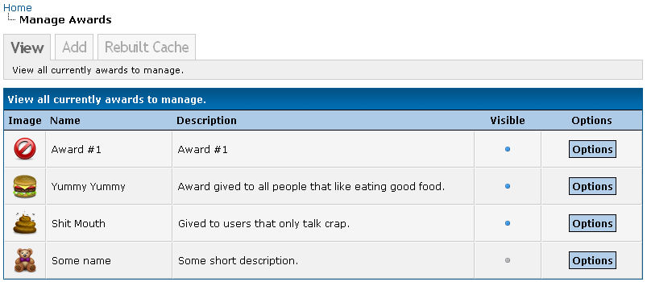
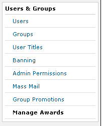
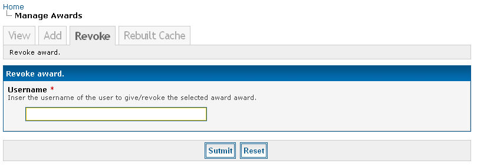
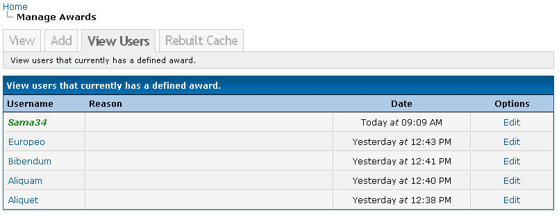
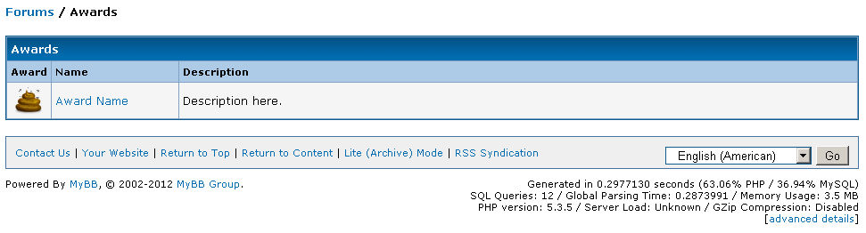
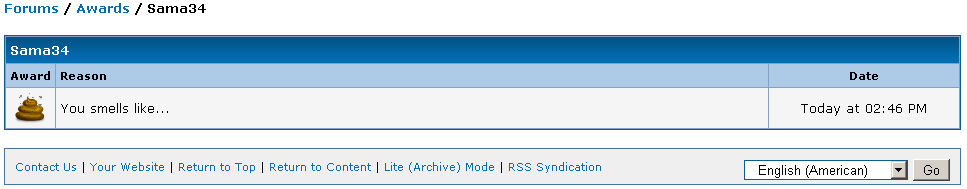
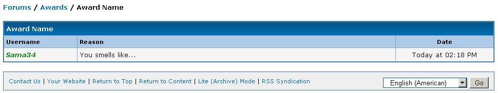
 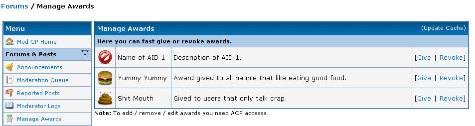
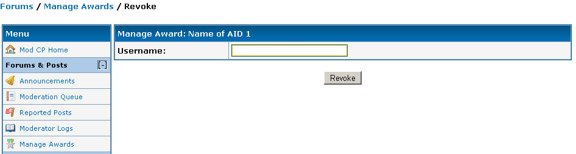
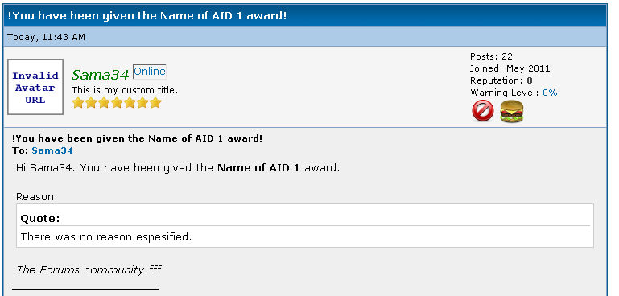
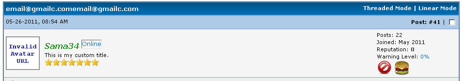
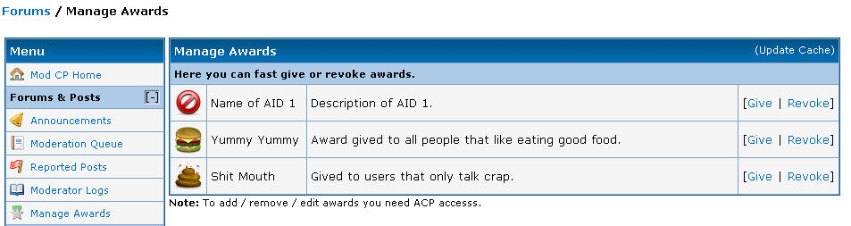
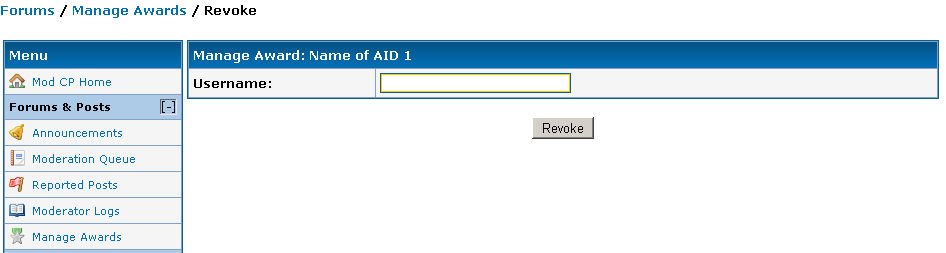
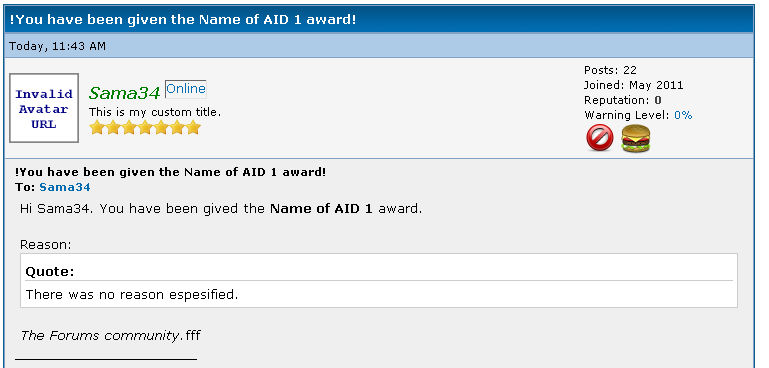
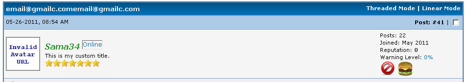
Soporte
Soporte gratuito en uDezain.
Leer Licencia
© 2012 - Omar Gonzalez - All Rights Reserved.